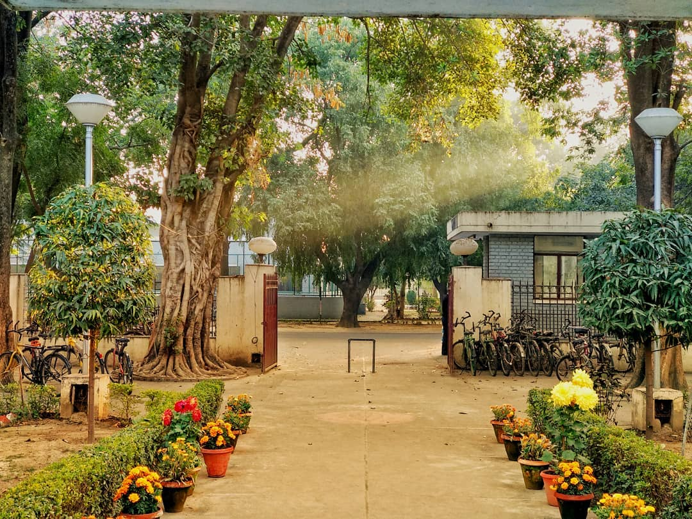
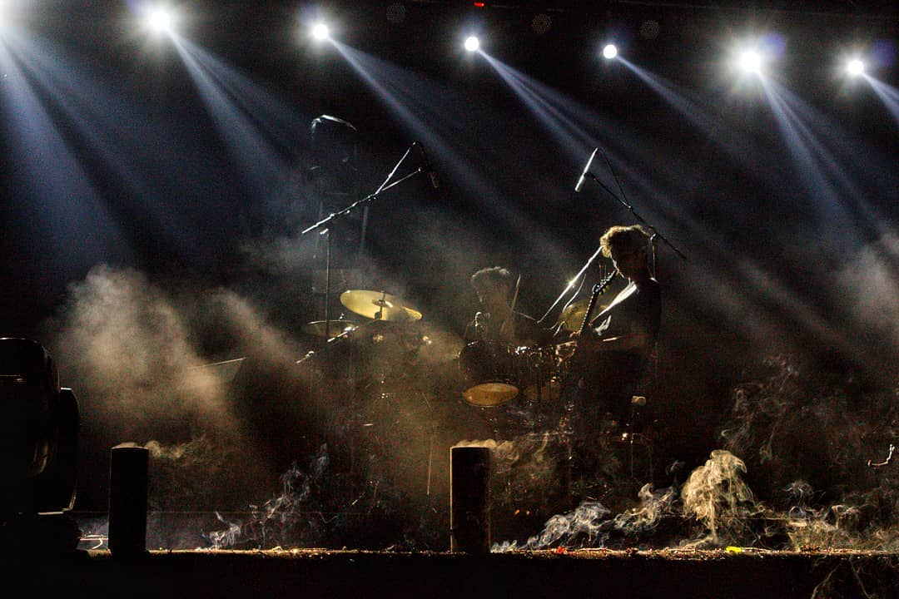

Personal
"So, so you think you can tell heaven from hell?" — here's the stuff beyond the résumé.
Beyond work, I'm an avid photographer, a novice writer (both tech and non-tech), and I love playing the guitar. I enjoy capturing moments through my lens and occasionally put thoughts into words.
Music & Pink Floyd
"Remember when you were young? You shone like the sun." — Shine On You Crazy Diamond
Progressive rock is my home, and Pink Floyd is the band that never leaves the turntable. Wish You Were Here, The Dark Side of the Moon, and Animals are on constant rotation — the perfect soundtrack for long nights of model training and longer nights of just listening.
I play the guitar too — mostly acoustic covers and a few originals. There's a certain overlap between a good Gilmour solo and a clean, well-tuned pipeline: both are about knowing which notes to leave out. Catch my guitar videos on Instagram @lightscameraguitar.
Give it a spin while you browse. Best experienced with the lights low.
Photography
"The lunatic is on the grass…" — landscapes, architecture, and candid light.
Here are some of my favorite shots. I love capturing landscapes, architecture, and candid moments. Check out more on my photography Instagram @lights.cameraclick.



Writings
"And if the band you're in starts playing different tunes…"
I share thoughts and articles on Medium. Here are some pieces I've written:
A reflection on inner struggles and the fight we all face within ourselves.
Exploring the nature of connections that transcend time and space.
Browse all my articles on tech, life, and everything in between.